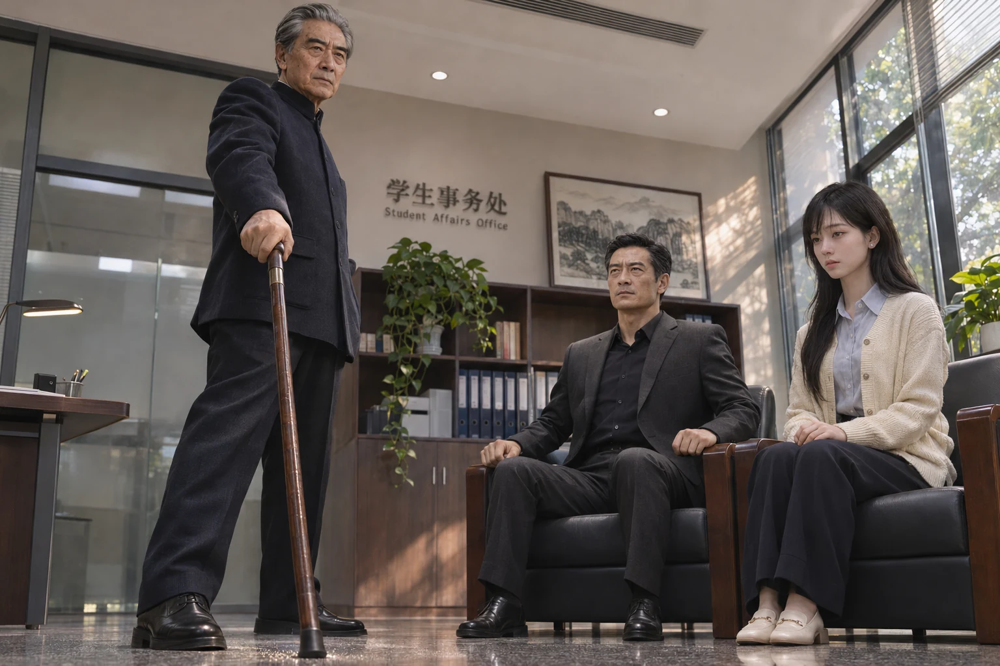
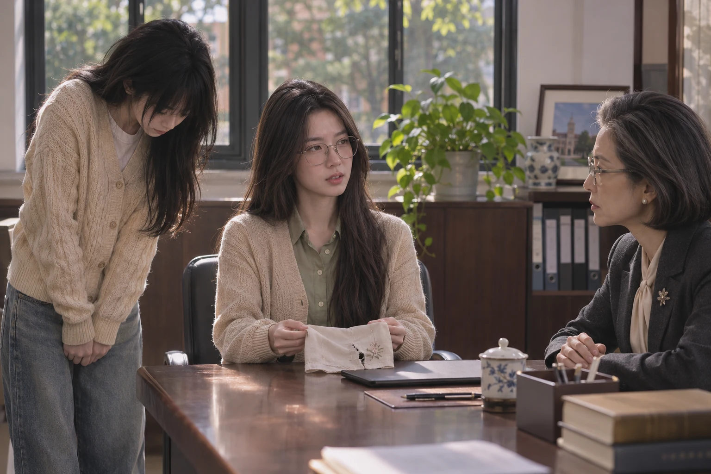
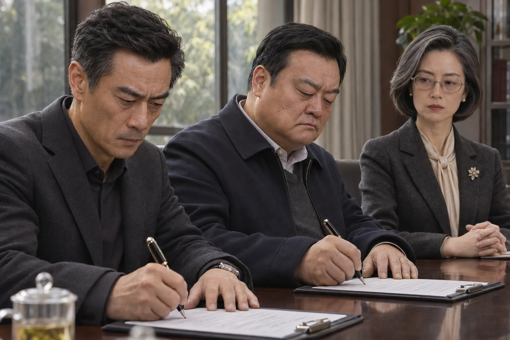
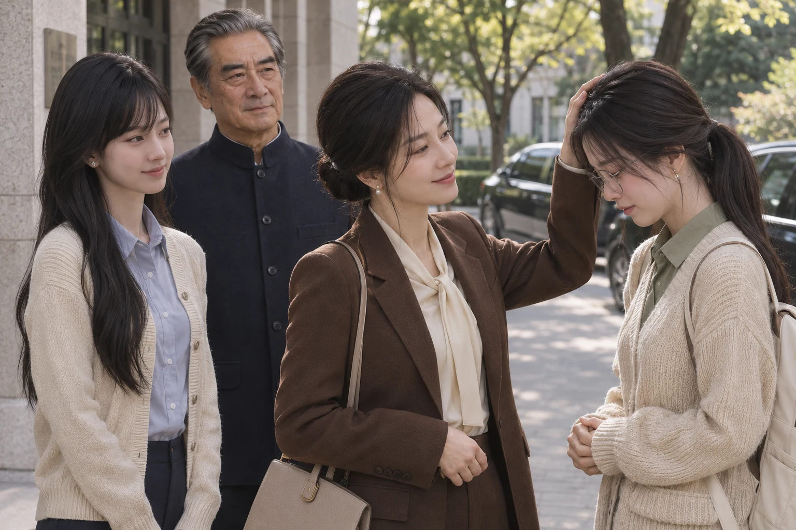
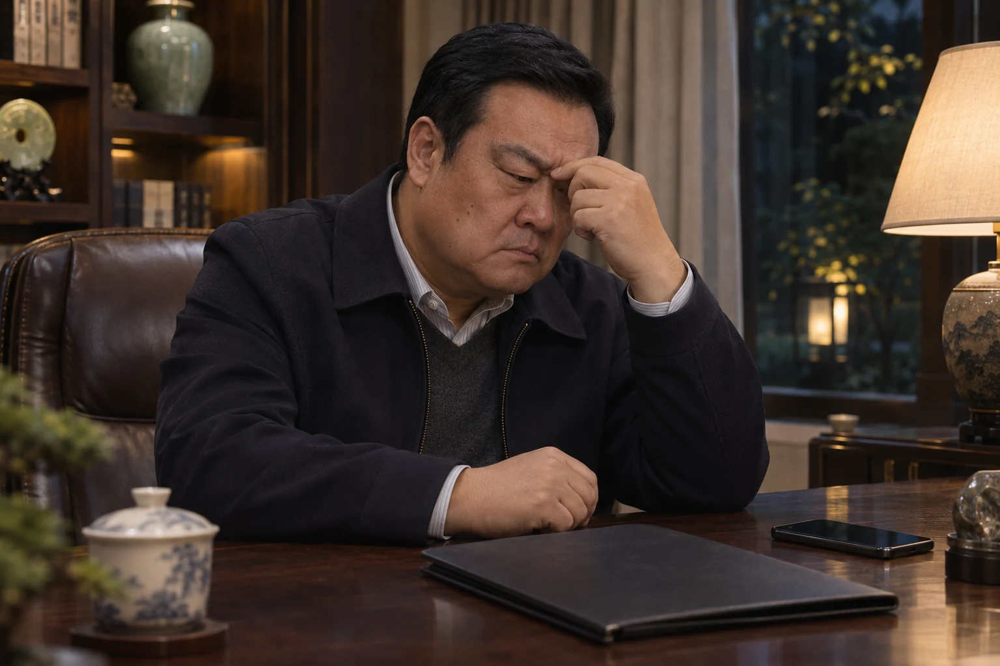

ตอนที่ 29
ช่วยทางอ้อม
“ในเมื่อคุณลุงเป็นกันเองขนาดนี้ หนูสามารถพูดแบบตรงไปตรงมาได้ไหมคะ คุณลุงจะมองว่าเสียมารยาทหรือเปล่า” ซ่งอวิ๋นยืดตัวนั่งหลังตรง ถามราวกับกลัวว่าจะล่วงเกินอีกฝ่าย
เอาเข้าจริงตระกูลหนานทัดเทียมตระกูลซ่ง ในด้านธุรกิจและอำนาจนั้นไม่ยิ่งหย่อนไปกว่ากันเลย แต่สิ่งที่เธอมั่นใจมากกว่าก็คือตระกูลซ่งมีเส้นสายมากกว่า ซึ่งเส้นสายเหล่านั้นเชื่อมโยงกับคุณปู่ของเธอโดยตรง
และข้อเสียก็คือ เมื่อคุณปู่เสียชีวิตกะทันหัน เส้นสายที่เขามีอยู่ถูกตัดขาดไปเพราะท่านยังไม่ทันได้ดันหลังใครขึ้นมาแทนที่อย่างจริงจัง แม้พ่อของเธอจะขึ้นมาเป็นใหญ่ แต่ถูกหลายเรื่องโหมกระหน่ำ ต้นไม้ใหญ่ถูกกัดกินจากราก ทำให้ตระกูลซ่งอันยิ่งใหญ่ล่มสลายลงไปด้วยน้ำมือคนไม่กี่ฝ่าย
หนานจื่อเฉียงลมหายใจสะดุดไปหนึ่งจังหวะ พูดมาเช่นนี้แล้วเขาจะปฏิเสธได้หรือ ตอนนี้ฝ่ายเขาตกเป็นรอง มีแต่ต้องรับปากเท่านั้น แต่ก่อนที่เขาจะกล่าวสิ่งใด ซ่งเหวินก็เอ่ยแทรกขึ้นมาเสียก่อน
“อาอวิ๋นอย่าเสียมารยาท เราไม่ควรไปไกลเกินไป ลูกเองก็ไม่ได้บาดเจ็บขนาดนั้น” ซ่งเหวินไม่เห็นด้วยถ้าลูกสาวนิสัยเสียของเขาจะสร้างความบาดหมางระหว่างซ่งและหนานโดยไม่จำเป็น
โจวจิ่วเกือบระเบิดอารมณ์ เขาใช้สมองส่วนไหนคิด ถึงบอกว่าไม่ได้บาดเจ็บมาก แค่คำพูดไม่กี่คำ ในฐานะคนถูกทำร้ายก็ไม่มีสิทธิ์พูดเหรอ
หนานจื่อเฉียงใจชื้น โชคดีที่ยังเจรจาได้ แต่ดูเหมือนเขาสบายใจเร็วเกินไปหน่อย
ตึง!!
“...” ผู้เฒ่าซ่งกระแทกไม้เท้าลงกับพื้นเพียงหนึ่งครั้ง คนทั้งห้องก็สะดุ้ง บรรยากาศในห้องกิจการนักศึกษาเย็นเยียบลงเรื่อย ๆ

ซ่งเหวินกลืนน้ำลายลงคออึกใหญ่ ความเจ็บปวดจากการโดนทุบตีด้วยไม้เท้า เขายังจำได้ขึ้นใจ จึงไม่กล้าโต้แย้งอะไรขึ้นมาอีก
“หนูไม่ได้พูดอะไรรุนแรงหรอกค่ะ แค่จะบอกว่าหนานชิวเองก็ไม่ได้รู้สึกผิด คำขอโทษสักคำยังไม่พูดเลย ต้องให้คุณลุงเป็นฝ่ายรับหน้า ซึ่งหนูเองเป็นคนนอก เข้าไปยุ่งเรื่องความขัดแย้งระหว่างพี่น้องไม่ได้ แต่หนานชิวบุกเข้ามาในห้องพักของหนู ไม่ยุ่งไม่ได้จริง ๆ ค่ะ”
“ฉันไม่ได้บอกนะว่าจะไม่ขอโทษ แค่ยังไม่มีโอกาสเฉย ๆ” หนานชิวเข่นเขี้ยวเคี้ยวฟัน เถียงข้าง ๆ คู ๆ เพราะที่จริงแล้วเธอก็ไม่ได้รู้สึกผิด สบายใจเสียอีกที่ได้ทำให้หนามแทงใจเพื่อนสนิทเจ็บตัวบ้าง
“โอกาสมีตั้งเยอะ ก็เห็นนั่งเฉยนี่นา จนตอนนี้ก็ยังไม่เห็นขอโทษเลย” ฟ่านเยว่พึมพำราวกับพูดกับตัวเอง แต่ได้ยินกันทั้งห้อง
ซ่งอวิ๋นและหนานหรงชอบฟ่านเยว่อย่างยิ่ง เพื่อนใหม่คนนี้เปิดเผย จริงใจ ตรงไปตรงมา คิดอะไรก็พูด ไม่มีพิษมีภัยอะไรเลยจริง ๆ
หนานชิวหน้าชาวูบ ยิ่งเห็นสายตาผิดหวังของผู้เป็นพ่อ เธอยิ่งกระวนกระวาย จำใจลุกขึ้นจากเก้าอี้ แล้วค้อมแผ่นหลังลง “ขอโทษนะซ่งอวิ๋น ฉันไม่ได้ตั้งใจให้เรื่องนี้เกิดขึ้น แค่จะเข้าไปหาพี่สาวเฉย ๆ แต่ตอนนั้นฉันโมโหมาก เลยควบคุมอารมณ์ไม่อยู่”
“ต้นเหตุมาจากผ้าเช็ดหน้าโดนตัด คุณหนานหรง คุณทำหรือเปล่าคะ” อาจารย์หัวหน้าฝ่ายถามขึ้น
“หนูไม่ได้ทำค่ะอาจารย์ หนูสาบานได้เลยว่าไม่เคยเห็นผ้าเช็ดหน้าผืนนี้มาก่อน” หนานหรงยืนยันหนักแน่น ใบหน้าน่ารักขัดกับความสุขุมที่เธอแสดงออก คำพูดของเธอน่าเชื่อถือในสายตาคนนอกเสมอ

ทว่าในสายตาคนเป็นพ่อ เขาไม่เคยเชื่อคำพูดเธอเลยสักครั้ง
“ถ้าไม่ได้ทำแล้วมันขาดได้ยังไง” หนานชิวหันไปแหวใส่ทันที เธอมั่นใจว่าอีกฝ่ายต้องเป็นคนทำแน่
อันที่จริงเรื่องนี้คนที่รู้ดีที่สุดคือซ่งหว่าน เพราะเธอเป็นคนตัดมันเองกับมือ เหตุผลก็ไม่มีอะไรมาก เธอแค่หาละครสนุก ๆ ดูแก้เบื่อเท่านั้น ใครจะคิดว่าเรื่องมันจะเลยเถิดใหญ่โตขนาดนี้
โชคดีที่เธอรออยู่นอกห้อง ไม่ได้เข้าไปข้างใน แม้โดนตำหนิก็คงไม่หนักหนาอะไร แต่ปฏิเสธไม่ได้ว่าเธออับอายจนหน้าชา เพราะตั้งแต่เกิดมา เธอเป็นเด็กดีในสายตาครูและพ่อแม่ ไม่เคยถูกเรียกเข้าห้องเย็นเลยสักครั้ง
“ถือว่าได้ขอโทษขอโพยกันแล้ว ทางมหาวิทยาลัยจะจัดการเรื่องนี้ยังไง” ผู้เฒ่าซ่งไม่อยากเสียเวลาไปมากกว่านี้ และตัวเขาเองก็มีวิธีจัดการแบบส่วนตัวแล้วเหมือนกัน
“เนื่องจากเป็นการทะเลาะวิวาทครั้งแรก มหาวิทยาลัยมีคำสั่งตักเตือนเป็นลายลักษณ์อักษร พร้อมทำทัณฑ์บนหนึ่งภาคการศึกษาด้วยค่ะ”
“หมายถึงอาหว่านด้วยเหรอครับ” ซ่งเหวินโพล่งขึ้นอย่างไม่เห็นด้วย ลูกสาวเขาไม่ได้เป็นคนลงมือ แค่ไปอยู่ในจุดเกิดเหตุ ไม่เห็นต้องทำให้เสียประวัติ
“ในทางกฎหมาย แค่ไปด้วยและไม่พยายามระงับเหตุก็ถือเป็นผู้ร่วมกระทำความผิดนะคะ แต่ทางมหาวิทยาลัยจะลดโทษให้กึ่งหนึ่ง แค่ตักเตือนเป็นลายลักษณ์อักษรในแฟ้มนักศึกษา” อาจารย์สาวอธิบายพลางขยับแว่นหนาเตอะ
อันที่จริงเธออยากอะลุ่มอล่วยให้ซ่งหว่าน เพราะเด็กคนนี้ก็เป็นอันดับสองในการสอบเกาเข่า เป็นอนาคตของชาติอีกคนหนึ่งที่ควรให้ความสำคัญ แต่เธอต้องใจแข็ง ทำทุกอย่างตามระเบียบ
“หนูเข้าใจค่ะอาจารย์ หนูยินดีรับบทลงโทษในครั้งนี้ค่ะ” ซ่งหว่านน้ำตาคลอ แต่ยังเข้าใจเหตุผล ยอมรับแต่โดยดี แม้ในใจจะมีคำสบถหยาบคายเท่าไหร่ก็ตาม
“เดี๋ยวผู้ปกครองเซ็นตรงนี้แล้วกลับได้เลยนะคะ”
ซ่งเหวินและประธานหนานเซ็นรับทราบในเอกสารของทางมหาวิทยาลัย แน่นอนว่าพวกเขาเสียหน้าที่ต้องมาทำอะไรแบบนี้ แต่ไม่มีทางเลือกนอกจากรีบเซ็นแล้วรีบกลับ

ก่อนกลับหนานจื่อเฉียงยังไม่วายกำชับลูกสาวทั้งสอง “สุดสัปดาห์นี้รีบกลับ พ่อมีเรื่องอยากคุยด้วย”
“ค่ะ” หนานหรงหลุบตาลง เธอชินชาเสียแล้ว มั่นใจว่าสุดท้ายแล้วเธอจะต้องกลายเป็นคนผิดตามเคย
“เข้าใจแล้วค่ะ” หนานชิวรู้ตัวดี ครั้งนี้เธอทำให้พ่อโกรธ แต่กว่าจะถึงวันนั้น แม่ของเธอคงช่วยเกลี้ยกล่อมจนความโกรธของพ่อทุเลาลงแล้ว
ทว่าหญิงสาวไม่รู้ว่าครั้งนี้แตกต่างออกไป ต่อให้แม่ของเธอโน้มน้าว หนานจื่อเฉียงก็ไม่หายโกรธง่าย ๆ เพราะเขาสูญเสียผลประโยชน์มหาศาล
“เดินทางกลับดี ๆ นะคะคุณแม่ คุณปู่”
“ลูกนั่นแหละดูแลตัวเองดี ๆ เมื่อเช้าพูดไม่ทันขาดคำ เจ็บตัวอีกแล้ว” โจวจิ่วอ่อนอกอ่อนใจ เธอมองออกว่าลูกสาวทำให้มันเป็นเรื่องใหญ่เพราะอยากช่วยเพื่อนใหม่ คงเห็นว่าชีวิตเพื่อนคล้ายตัวเองมาก ซึ่งลูกนอกสมรสของตระกูลหนานดูร้ายกาจและกล้าลงมือโดยไม่อายสายตาใครเลย
ถึงขั้นกล้าปาผ้าเช็ดหน้าใส่พี่สาว ตอนอยู่บ้านจะขนาดไหนกัน
“ค่า ๆ ไม่เจ็บตัวแล้ว คุณปู่.. หนูฝากด้วยนะคะ”
คำขอของหลานสาวเพียงประโยคเดียว ผู้เฒ่าซ่งก็รู้ทันทีว่าเธอหมายถึงเรื่องใด “วางใจเถอะ หลานเรียนให้สนุก เดี๋ยวปู่จัดการต่อเอง”
“หนูขอโทษอีกครั้งนะคะ” หนานหรงจ้ำอ้าวตามหลังผู้ใหญ่จากตระกูลซ่ง หลังยืนส่งพ่อของเธอขึ้นรถไปแล้ว
“ไม่ใช่ความผิดของหนู ไม่ต้องขอโทษหรอกลูก” โจวจิ่วลูบศีรษะเด็กสาวอย่างเมตตา อดสะท้อนใจเสียไม่ได้ ชีวิตของหนานหรงคล้ายลูกสาวเธอมาก ออกจะโชคร้ายกว่าเพราะไม่มีปู่ย่าหนุนหลัง สองแม่ลูกต้องทนรับความอยุติธรรมกันแค่สองคน

“จริง เธอไม่ได้ทำอะไรผิด แล้วก็นะ.. ถ้าน้องสาวแกล้งเธอแบบนี้บ่อย ๆ ลุกขึ้นมาสู้บ้างก็ได้ ยิ่งเรายอมมากเท่าไหร่ อีกฝ่ายยิ่งได้ใจ” ซ่งอวิ๋นตบหลังหนานหรงเป็นเชิงปลอบประโลม
“อื้อ ฉันจะพยายาม ถึงไม่รู้ว่าจะได้ผลหรือเปล่าก็เถอะ”
ผู้เฒ่าซ่งเห็นชัดเจนว่าอาอวิ๋นดูให้ความสำคัญกับเพื่อนใหม่คนนี้มาก การจัดการของเขาคงทำให้หนานจื่อเฉียงมีสติขึ้นมาบ้าง
ซ่งเหวินทอดสายตามองผู้เป็นพ่อ กล่าวได้ว่าตั้งแต่ต้นจนจบ เขาแทบไม่อยู่ในสายตาพ่อเลย อีกฝ่ายทำเหมือนเขาเป็นธาตุอากาศ พานให้คิดเปรียบเทียบตัวเองกับน้องชาย
ถ้าคนที่ก่อเรื่องคือซ่งเซวียน พ่อของเขาคงยินดีให้อภัย และทำเหมือนเรื่องที่ซ่งเซวียนมีชู้ไม่เคยเกิดขึ้น ท่านลำเอียงมานานแล้ว
“พ่อคะ ขอโทษนะคะ หนูทำให้พ่ออับอาย” เสียงของลูกสาวดึงสติเขากลับมาอยู่กับเนื้อกับตัว
“ช่างมันเถอะ ลูกไม่ได้ตั้งใจ”
...
หนานจื่อเฉียงกลับถึงบ้านมาพร้อมอารมณ์ไม่มั่นคงนัก วันนี้เขาเสียหน้า รู้ถึงไหนอายไปถึงนั่น ที่น่ากังวลกว่านั้นก็คือ ผู้เฒ่าซ่งอาจทำบางอย่าง ยิ่งเห็นท่านไม่พูดอะไรเลยระหว่างอยู่ในห้องกิจการนักศึกษา เขาก็เตรียมใจมาแล้วส่วนหนึ่ง
“คุณคะ.. เป็นยังไงบ้างคะ เกิดอะไรขึ้น”
“คุณสอนลูกยังไง ทำไมเสี่ยวชิวถึงกล้าปาของใส่หน้าเสี่ยวหรง” หนานจื่อเฉียงตำหนิเมียรักอย่างหงุดหงิด
“อะไรกันคะ ปกติเสี่ยวชิวไม่เคยมีพฤติกรรมแบบนั้นนะ” เธอเบิกตากว้าง ยกมือทาบอกอย่างตื่นตกใจ ถึงเคยทำเธอก็ไม่ยอมรับ
“เคยไม่เคยก็ทำไปแล้ว แถมยังไปทำร้ายร่างกายไข่มุกบนฝ่ามือผู้เฒ่าซ่งด้วย รอดูเถอะว่าหลังจากนี้เราจะเจอกับอะไร จิ้งจอกเฒ่านั่นยิ่งน่ากลัวอยู่” หนานจื่อเฉียงหงุดหงิดงุ่นง่าน
คนมักบอกว่าตระกูลหนานยิ่งใหญ่ทัดเทียมตระกูลซ่ง แต่เขารู้ดีว่าเบื้องหลังยังมีอะไรอีกมากมายที่เขาเทียบไม่ติด
กังวลไม่กี่ชั่วโมง สิ่งที่คาดเดาไว้ก็เกิดขึ้นจริง ความร่วมมือครั้งใหญ่ มูลค่ามหาศาลที่เขาเคยดีลไว้ถูกปฏิเสธ ฝ่ายนั้นไม่ได้พูดถึงสาเหตุตรง ๆ แต่เขารู้ดีว่านี่เป็นฝีมือของผู้เฒ่าซ่ง
หนานจื่อเฉียงพรูลมหายใจหนัก ๆ ยกมือนวดหว่างคิ้ว ย้อนคิดทบทวนสิ่งต่าง ๆ ที่เกิดขึ้นยามอยู่ในห้องกิจการนักศึกษา เขาไม่ใช่คนโง่ ไม่นานก็นึกขึ้นได้ว่าคนที่จะช่วยแก้สถานการณ์คือลูกสาวคนโต

อย่างน้อยเพื่อไม่ให้ความสัมพันธ์ระหว่างสองตระกูลย่ำแย่ไปกว่านี้ หนานหรงต้องช่วยเป็นตัวเชื่อมความสัมพันธ์ บางทีอาจได้รับผลประโยชน์มากกว่าที่เคยสูญเสียไปในวันนี้
มาอีกน้า